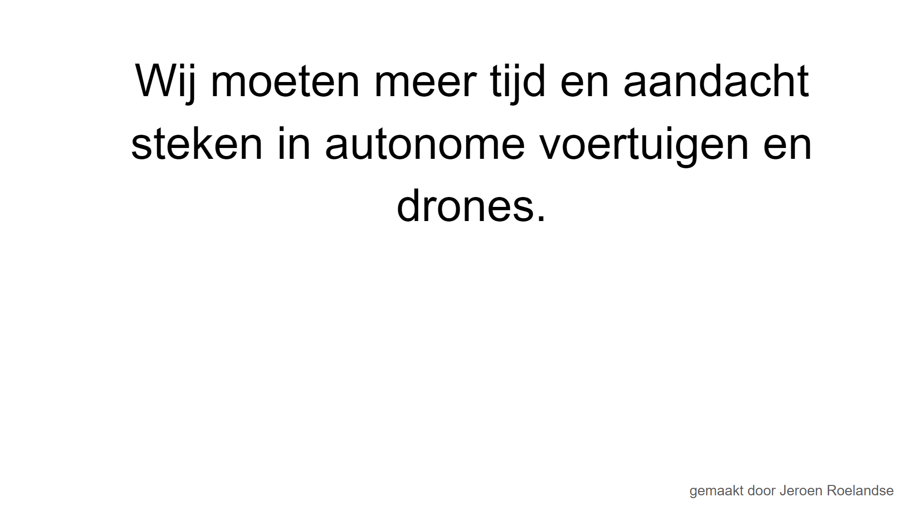

Op dit tabblad van mijn site ga ik het hebben over waarom autonome voertuigen en drones meer voordelen hebben dan nadelen en waarom dit zo is. Hier precies onder staat een foto van mijn presentatie waar je op kan klikken, hier geef ik een korte presentatie over mijn betoog over dit onderwerp (een soort van kleine samenvatting). Als je liever het volledige verhaal wilt lezen raad ik aan om het volledige betoog te lezen die ik hier onder heb genoteerd.
De laatste tijd horen we steeds meer over autonome voertuigen en drones, de toekomst van transport. De bekendste investeerder is natuurlijk onze grote vriend van Tesla, Elon Musk. Met deze grote voortzetting van onze technologie van ons geweten van autonomie en onze technologische apparatuur in het algemeen is het niet alleen maar zonneschijn. Er zijn namelijk ook een aantal slechte dingen die komen kijken bij deze onderwerpen zoals; meer werkloosheid en privacyschending, maar dit hoeft niet alles te betekenen. Daarom ga ik vandaag verschillende onderwerpen aanhalen en hoe autonome voertuigen en drones daar een rol bij spelen en zal een conclusie geven waarom autonome voertuigen en drones juist erg goed zijn voor onze maatschappij.
Autonome voertuigen zijn de toekomst van het wereldwijde verkeer, al is het niet voor iedereen beschikbaar zijn er al auto's die het hele verkeer van personen overnemen. Helaas, zoals ik al eerder heb gezegd is dit nog niet voor iedereen beschikbaar, maar gelukkig zijn er minder verdere technieken die meer verkrijgbaar zijn voor de meerderheid van de maatschappij. Enkele voordelen van autonome voertuigen zijn; uiteindelijk wordt 99% procent van de fouten in het verkeer gemaakt door menselijke fouten, autonome voertuigen zullen daardoor het verkeer veel veiliger maken ook zal de weg meer toegankelijk worden omdat je geen rijbewijs meer nodig hebt om te in een auto te zitten, omdat de auto vóór je wordt bestuurd. Een ander voordeel is dat er een veel snellere doorstroming komt voor voertuigen op de weg, door de exacte calculaties van een computer kunnen de voertuigen exact weten welke volgafstand zij moeten aanhouden om een veilige situatie te behouden ook kunnen autonome voertuigen veel sneller reageren dan de gemiddelde persoon kan waardoor bepaalde situaties in het verkeer veel beter en sneller kunnen worden afgehandeld dan een persoon ooit had gekund. Naast voordelen van autonome voertuigen zijn er ook een aantal nadelen. Autonome autos zijn (als wij de mensen die er verstand van hebben mogen geloven) veel beter dan autorijdende mensen in alle aspecten hierdoor is er eigenlijk een persoon achter het stuur compleet zinloos, hierdoor zullen mensen geen rijbewijs meer nodig hebben en hierdoor zullen alle rijscholen failliet gaan waardoor veel mensen zonder werk komen. Hiernaast zijn er natuurlijk nog veel andere beroepen die draaien om het besturen van een auto die totaal zinloos wordt door autonome auto’s. Conclusie; door autonome auto’s ontstaat er veel meer werkloosheid en daardoor meer armoede onder de gemeenschap. Naast het grote aantal banen wat verloren gaat zijn onze beveiligingssystemen nog niet perfect, door middel van een bug in het systeem of dat het systeem door iemand gehackt wordt van een autonome auto zou er veel chaos en vernieling kunnen plaatsvinden waardoor een groot gedeelte van het verkeer in de hele wereld plat kan komen te liggen. Natuurlijk moet je kunnen verwachten dat als wij als gemeenschap zo ver zijn dat wij als mens niet meer nodig zijn in het verkeer dat onze veiligheidssystemen toch een redelijk tikje beter zullen zijn, maar je kan het feit niet wegschrijven dat het altijd een kans heeft om te gebeuren ( het beveiligde software wordt nog steeds gemaakt door mensen).
In vergelijking met autonome voertuigen zijn drones al veel langer op de markt dan zij. Hierdoor zijn deze nuttige gadgets niet alleen goed uitgerust voor ons om plezier mee te hebben, maar tegenwoordig worden drones ook al gebruikt voor competities en soms zelfs voor militaire doeleinden. Dit kunnen wij in werking zien met de oorlog in Oekraïne, waar Oekraïne Rusland aanvalt met grootschalige drone aanvallen ver van de grens af. Dit is misschien niet een leuk onderdeel van onze toekomst en representeert niet goed hoe ver wij zijn met drones, daarom zijn hier nog een paar betere voordelen van drones; Als jij een mooi plaatje wilt schieten wat je foto vaak gelimiteerd omdat je de juiste hoek niet kan krijgen of de juiste belichting voor de foto en met drones kan dit een stuk gemakkelijker. Door de ongelooflijk makkelijke mobiliteit van een drone zijn de mogelijkheden eindelijk eindeloos. Wil je een mooie foto boven een ravijn, het kan nu met een drone. Wil je het perfecte plaatje schieten bij Manhattanhenge in New York tijdens de jaarlijkse zeer competitie plaats waar honderden fotografen staan om een mooie foto te maken van de zon tussen 2 wolkenkrabbers, het kan nu met een drone. Oftewel, hoe al eerder is gezegd: de mogelijkheden om je creativiteit te uiten zijn zo veel beter en groter geworden door middel van drones. Net zoals bij autonome voertuigen is er ook een grote prijs range voor drones. Drones worden steeds goedkoper en verbeteren steeds meer in waarde waardoor een grotere markt ontstaat en daardoor betere keuzes zijn voor de mensen die al een drone hadden ook is de bediening van drones veel verbeterd, de meeste drones kan je tegenwoordig met je telefoon bedienen. Dit laat zien toegankelijker worden voor de normale burger en wie weet wat er in de toekomst allemaal met de drone kan. Uiteindelijk blijven er ook nog een paar nadelen hangen bij de drone zoals dat een drone een prachtig maar toch een gevaarlijk voertuig kan zijn, het zou niet fijn zijn als je deze tegen je hoofd aan zou krijgen. Daarom is het best raar dat je deze apparaten zonder vergunning zo maar door iedereen bestuurd kan worden. Een eenmalige cursus voor een bevoegdheidsverklaring voor de besturing van een drone lijkt mij meer dan handig en veilig. Hiernaast zijn mensen bang dat drones kunnen worden gebruikt om de hulp van een terroristische aanslag te plegen. Gelukkig is de ontwikkeling van drones nog niet zo ver gekomen dat dit daadwerkelijk is gebeurd, maar hoe er al in het begin verteld is over de oekraïense aanvallen op Rusland is deze gedachtegang niet geheel onlogisch en daardoor ook iets waar wij op moeten letten bij drones in de toekomst.
Leuk en aardig zelfrijdende auto’s maar het is niet zo makkelijk om deze voertuigen zo maar de weg op te sturen. De weg lijke wetgeving moet worden aangepast in zijn totaliteit voor deze bijzondere nieuwe weggebruikers. Daarom zal ik 2 dilemma’s doornemen: wat voor uitdagingen wij moeten tegen gaan om dit te laten werken. 1. Zijn we goed voorbereid op de komst van automatisch rijden? Het is natuurlijk veel makkelijker als alle auto's autonoom waren en in verbinding stonden met elkaar (Dan kunnen ze elkaar waarschuwen voor mogelijke gevaren) maar dit is helaas nog niet zo. Op een gegeven moment zal er een periode zijn waar een groter gedeelte van de voertuigen op de weg niet autonoom zijn, maar ook al een groot gedeelte wel. 'Deze tussenperiode is nog erg onduidelijk. Het is niet aannemelijk dat die tussenperiode veiliger wordt. Sterker nog: hij zou best weleens onveiliger kunnen worden. Maar daar moeten we doorheen, als we automatisch rijden willen laten slagen. Veel draait dan om het maatschappelijke draagvlak om die tussenperiode te accepteren.’ Zegt Simeon van de TU Delft. Als we meneer Simeon mogen geloven is er dus nog een lange weg te gaan op de weg die niet per se onveilig is maar ook niet veel veiliger, maar uiteindelijk streven we naar een veel veiliger resultaat. 2.Moet de infrastructuur zich aanpassen aan zelfrijdende auto’s of moeten de auto’s zich aanpassen aan ons huidige wegsysteem? Al zouden we natuurlijk willen dat de autonome auto meteen de weg op kan, kan dit in werkelijkheid niet. Hier is helaas onze infrastructuur niet op gebouwd en moet hier nog veel aan gedaan worden, of moeten ze de autonome auto aanpassen aan de wegen die wij nu hebben. Simeon van het TU Delft zegt het volgende hierover;’ Dus al zouden ze willen samenwerken, de infrastructuur kan het innovatietempo niet bijbenen. Op kleine punten zouden ze elkaar wel kunnen helpen. Dat is vooral in de basisvoorwaarden. Zorgen dat de strepen op de weg overal duidelijk zijn en goed worden bijgehouden, bijvoorbeeld. Dan kunnen de auto’s deze strepen betrouwbaar analyseren voor lane keeping-systemen .’ Hieruit blijkt dat innovatie tempo van de autonome auto’s zo snel ontwikkeld worden dat onze infrastructuur het niet kan bijhouden, maar de duidelijkheid van de weg zoals wordt genoemd de lijnen van de onderscheiding van de wegdelen extra duidelijk maken zal al veel helpen.
Naast dat drones handig zijn voor mooie shots voor camera's zijn er ook wat juridische mispunten. Zoals de veiligheidsrisico's die komen kijken bij een drone. Drones worden (als ik al eerder gezegd heb) steeds populairder en populairder, maar dat betekent niet dat deze bestand is tegen een eventuele cyberaanval. Een hacker heeft niet eens zijn eigen drone nodig - hij kan de jouwe op verschillende manieren hacken en er alles mee doen. De problemen op het gebied van cyberveiligheid zullen alleen maar nijpender worden naarmate het aantal drones in ons luchtruim toeneemt en hackers slimmer worden in het opsporen van eventuele zwakheden in de beveiliging van drones. Drones kunnen ook zorgen dat er andere elektronische apparaten worden aangevallen door een cyberaanval. Daarnaast kunnen deze handige gadgets ook gebruikt worden om chaos te veroorzaken, wat al eerder is genoemd door middel van terroristische aanvallen. Dit is dan nog op grote schaal weergegeven maar kan ook op kleinere schaal voorkomen zoals vernieling van iemands eigendom zoals een fiets of een auto.
Al ver voordat autonome auto's een ding waren, waren er al veel auto's verbonden met het internet en het wereldwijde web. Helaas is er tot nu toe nog weinig bekend hoe ons privacy recht wel of niet geschonden kan worden, omdat autonome voertuigen nog niet een heel breed en juist wel vooral heel nieuw concept zijn. Het enige waar wij op af kunnen gaan is wat wij verwachten autonome voertuigen op kunnen slaan voor een betere rijervaring en daaruit verder te werken naar een conclusie. Evert Eckhardt zegt het volgende; ’Software gedefinieerde voertuigen lijken steeds meer op datacenters in hun vermogen om data van de auto, reis, bestuurder en passagiers te verzamelen, te verwerken en te analyseren. Technische informatie – zoals brandstofverbruik, snelheid, rijgedrag, locatie en routes – creëren inzichten die autofabrikanten kunnen gebruiken om hun diensten te verbeteren, evenals de algemene ontwerpelementen van de verbonden auto’s die ze produceren. In combinatie met persoonlijke informatie (biometrische data, bijvoorbeeld leeftijd of lengte) en omgeving gegevens (zoals het weer, weersomstandigheden) kunnen software gedefinieerde voertuigen ook machine learning-mogelijkheden toepassen. Zo kunnen de beschikbare gegevens worden gebruikt om rij gewoonten en voorkeuren te modelleren, en er vervolgens op te anticiperen, om een comfortabelere, intuïtieve en bovenal gepersonaliseerde rit te bieden.’ Wat wij hieruit kunnen halen is dat er twee soorten informatie (technische informatie en persoonlijke informatie) zijn die wordt gebruikt om het voertuig te leren van de bestuurder/de mensen in de auto. Technische informatie is dus beter inzicht te bieden en voor de autofabrikanten om betere producten te leveren (waar weinig mis mee is).Hiernaast hebben we ook persoonlijke informatie die wordt opgedaan voor biometrische data, bijvoorbeeld leeftijd en lengte, wat op zichzelf niet heel schadelijk is, maar dit kan leiden tot iets veel groters. Tot nu toe is het alleen de opname van leeftijd en lengte, maar het is niet raar om te verwachten dat autonome auto's online profielen kunnen gaan maken van hun bestuurders en dat bedrijven hierdoor aan jouw profiel geld kunnen verdienen om te verkopen.
Één van de grootste nadelen van drones is dat ze overal en nergens kunnen rondstruinen. Dit is al een groot probleem in de huidige media, dat drones overal naar binnen kunnen gluren met hun camera’s en dat je zelf in je eigen tuin je niet meer veilig kan voelen. Natuurlijk is dit een beetje overdreven, maar er zit zeker een kern van waarheid in. Het ligt er wel een beetje aan welke drone je hebt en hoe goed de camera is op de drone, maar al heb je een slechte camera, je brengt al snel ongevraagd mensen in beeld zonder hun toestemming en dit zal al in strijd moeten gaan op grond van privacyschending. De eerder genoemde bron van drone123.nl zegt het volgende;’Heel simpel: drones zijn een aantasting op de privacy wanneer je bijvoorbeeld mensen in beeld brengt die daar niet om hebben gevraagd. Ook al zijn deze mensen vaak onherkenbaar omdat het op een grote afstand is; privacy is privacy. Er zijn tegenwoordig zelfs drones beschikbaar (voornamelijk door overheid en instanties) die tot 30x kunnen inzoomen.’ Dit laat zien dat drones toch tot op redelijke hoogte in strijd zijn met de privacywet. Dit is ook waarom wij onze technologie nog steeds moeten aanpassen totdat ze onze wetten kunnen naleven.
Autonome voertuigen zijn gemaakt om mensen/de gemeenschap te helpen, maar voor sommigen komt dit niet per se goed uit. Veel liefhebbers van de auto’s kunnen zich hier nog niet zo goed bij neerleggen. Dit is natuurlijk omdat ze dan niet meer zelf in hun mooie auto’s mogen rijden, maar het helaas voor hen voor hun gedaan wordt. Nu ligt het aan de overheid/ de mensen die er over gaan of dit een groot genoegen impact maakt om de technologie te bespreken, maar ik acht de kansen erg klein. Daarnaast draait onze westerse cultuur (maar ook de rest van de wereld) redelijk dat wij overal naartoe willen en dat we veel willen reizen. Het enige jammere is alleen dat niet iedereen hun rijbewijs kan krijgen en/of het geld er niet voor over heeft of in totaliteit niet heeft. Hierdoor is een autonoom voertuig een eigenschap voor dit, hierdoor kunnen wij overal naartoe rijden waar we ook naartoe willen zonder de angst dat wij niet goed genoeg rijden op de weg. Hiernaast is ook een groot gedeelte van de westerse cultuur vooral een lekker glaasje alcohol drinken en uitgaan. Een groot probleem dat hierbij ontstaat is dat mensen daarna met veel alcohol in hun bloed gaan rijden en dan een ongeluk veroorzaken. Hiervoor is een autonome auto ook erg praktisch en vooral veel veiliger na een avondje gezellig drinken. Uiteindelijk krijg je hier alleen maar een veiligere en bereikbare samenleving voor.
Drones zullen niet zorgen voor een grote shift in een bepaalde cultuur. Drones zijn voornamelijk apparaten die wij hebben om mooie foto/video's mee te maken. Toch is onze technologie er nog steeds goed in om ons werk uit onze handen te nemen. Drones worden tegenwoordig niet meer alleen gebruikt om foto's te maken, ze worden ook gebruikt om levens te redden. Drone-Part-Center zegt het volgende; ‘De drone kan snel moeilijk bereikbaar terrein en grote gebieden scannen, basisinformatie verzamelen en de locatie van vermiste personen opsporen voordat hulpverleners ter plaatse zijn. Teams kunnen dan de stand van zaken kennen om de juiste beslissingen te nemen en snel te handelen. Wereldwijd gebruiken hulpdiensten drones vanwege hun unieke mogelijkheden. Dankzij hun bijdrage aan diverse veiligheidsoperaties of klimaat noodsituaties hebben deze machines al duizenden levens kunnen redden.’ Hieruit blijkt dat de drone ons menselijk onvermogen weer kan overtreffen.
Autonome voertuigen en drones zullen altijd een verbetering in plaats van dat ze er niet waren. Goed, er zullen altijd een paar nadelen zijn met nieuwe technologie, omdat het niet zoals het oude is en mensen houden ervan om zich aan het oude te blijven vestigen. Tuurlijk zouden we een gedeelte van onze privacy moeten inleveren op het moment, maar je zal hiervoor zo veel meer veiligheid, creativiteit en bereikbaarheid voor terug krijgen dat ik denk dat het op het moment al waard is om deze technische uitvindingen zo goed mogelijk te ondersteunen. Ik heb er ook het volste vertrouwen dat in een mum van tijd de grootste problemen zoals privacy schending en dat deze apparaten gehackt kunnen worden opgelost. Het is namelijk zo dat deze problemen verbeterd kunnen worden door betere beveiligingssystemen en strikter beleid op privacy in het algemeen en zoals ik al eerder heb gezegd, je krijgt hier ongelooflijk veel voor terug. Oftewel, we hoeven niet bang te zijn om onze nieuwe technologie, we kunnen er alleen maar op vooruit gaan.